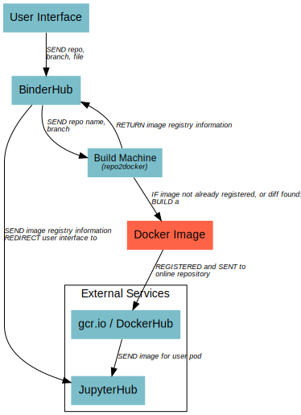

1. The BinderHub Architecture¶
BinderHub connects several services together to provide on-the-fly creation and registry of Docker images. After a user inputs a GitHub repo name or URL, BinderHub primarily does the following things:
- Builds automatically a Docker container image using Repo2Docker.
- Registers this Docker image with an online registry.
- Sends registry information to a JupyterHub instance that then serves the Docker image.
Here is a high-level overview of the components that make up BinderHub.
